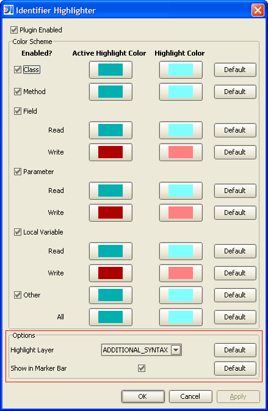

Options
IntelliJ has layers similar to Photoshop such that higher layers take precedence over lower
layers. Therefore, the same source code text may be affected in visual style because it
has a syntax error and because the Identifier Highlighter is highlighting it. Some
might prefer the identifier highlighting to be more important than the syntax error and some
may not. The Highlight Layer selection allows customization of the precedence of the
highlighting.

The choices of layers that are supported are {SELECTION, ERROR, WARNING, GUARDED_BLOCKS,
ADDITIONAL_SYNTAX, SYNTAX, and CARET_ROW}.
To the right of the editor window is a vertical gutter called the marker bar where various
features place short little colored bars. The identifiers that have been highlighted
can also be marked in the marker bar. This can be toggled off or on with this checkbox.